Build Atelier 1.0.0 / Minecraft 26.3
Controls and tools
Jump to a topic below. New users can start with the introductory steps on the guide home page.
Build Atelier settings
If you have not installed the mod yet, start with the installation instructions on the guide home page.
Press B in your world to open the Build Atelier settings. Press B again or select Close when you have finished.

| Build Atelier | Turn Build Atelier itself on or off. |
|---|---|
| Block Reach | Adjust the reach for placing, breaking, and using blocks. |
| Flight Speed | Adjust Creative flight speed from 1× to 10×. |
| All Guides | Show or hide the operation guides as a whole. |
| Left guide | Switch between tool-specific controls and shared controls. |
| Center guide | Show or hide the operation guide in the center of the screen. |
| Ghost controls | View instructions for height display and management of placed ghosts. |
During Creative flight with Build Atelier enabled, reduced drift after releasing movement input helps you stop where you want. You can also move through blocks to travel between the inside and outside of a build.
H switches the left guide; Ctrl+H toggles all guides. If Sneak is bound to Ctrl, use Shift wherever this guide uses the shared Ctrl modifier.
Note: this guide uses default bindings. If you changed them, follow the in-game guide.
Selection
- Press Left Alt and choose a tool such as Copy.
- Left-click a block at one corner of the intended region to set Pos1.
- Right-click the opposite corner to set Pos2. The box includes both corner blocks.
- Check the outline from another angle. Make sure the ground and nearby builds are not included accidentally.
- Press X to confirm the selection and continue to the preview or settings. Q during selection exits the tool.
Clicks set corners during selection. Right-click has a different role during placement preview. Paired blocks such as doors and beds may have their other half added automatically; check the resulting region too.

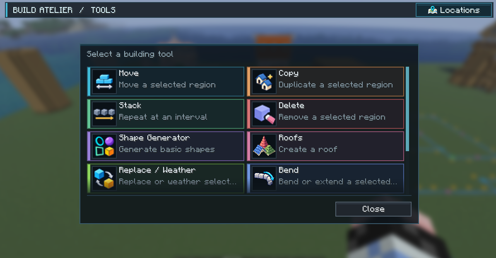
Adjust a selection face
- Aim at the selection face you want to adjust and press Z.
- Scroll to move the locked face. For top/bottom faces, scroll up to raise it and down to lower it. For side faces, scroll up to push away and down to pull toward you.
- Press Z to keep the adjustment and return to selection, or X to keep it and confirm the whole region.
- Q during face editing cancels that adjustment and restores the previous region.


Add and exclude regions
Use this to copy separate pillars together or leave part of a selected build out of the operation. The example below uses normal selection in Copy. Adding or excluding regions does not itself change world blocks.
- Select the first region with Pos1/Pos2. Do not confirm with X yet.
- To add a separate region, aim away from existing selected regions and Ctrl+left-click to set a new Pos1, then right-click to set Pos2.
- To exclude part of a region, activate its parent region and press C to switch to exclude mode. Left-click inside the parent to set the exclusion box’s Pos1, then right-click to set Pos2. These steps create the first exclusion for that parent.
- To remove a whole region from the selection, use C to match its kind (select/exclude), aim at its outline, and Ctrl+left-click. Removing a parent also removes its exclusion regions.
- A normal left-click activates another region; Z adjusts its face. X confirms the complete selection.
C depends on the tool and state. In Delete it cycles normal, circular, and rectangular selection instead, so follow its on-screen guide rather than applying this exclusion procedure. Ctrl+Z/Y while editing a selection undo/redo the selection only.
Connected selection: select touching blocks
Connected selection is shared by tools that use region selection. This example uses Copy: choose Copy, then press Tab during selection. Existing selections are kept when switching modes.
- Left-click a block to select the connected group of the same block type. Only face-to-face connections count; orientation and other block states do not separate a group. Pos1/Pos2 are not needed.
- Left-click another material or a separate group to add it. No Ctrl modifier is needed.
- Selected blocks have a pale cyan tint on visible surfaces. Look around the build to check hidden sides. Clicking an already selected block removes its connected group from the selection, without breaking blocks. Ctrl+Z/Y undo/redo selection edits.
- For large groups, wait for search and tint preparation. Clicking again during a search cancels it. If a limit or unloaded-region warning appears, check the selection and choose a smaller or loaded region.
- Press X to confirm. In Copy, move the ghost away from the original and inspect it; release the drag button and right-click to place, or press Q to return to selection.
Matching blocks connected to a floor or nearby building may be selected too. Press Tab to return to normal selection without clearing the selection. Normal selection’s C, Ctrl+click and Z face editing do not apply while connected selection is active.
Basic ghost controls
A ghost shows the planned placement before you commit it. For Copy and Move, use the following controls. This is separate from a saved reference ghost in the Library.
| Move | Aim at the ghost, hold the left mouse button, and move your player. Release to keep the position. |
|---|---|
| Fine adjustment | Left/right arrows move sideways; up/down change height. Scroll up moves away, down moves closer. |
| Orientation | R rotates horizontally by 90°; F mirrors front/back. |
| Bring into view | Ctrl+V moves the ghost in front of your view. Use it to bring a distant ghost close to you. |
| Place | Release the left button, then right-click. Wait for completion. |
| Back | Q discards the planned placement and returns to selection. |
Ctrl+R rotates vertically by 90°; Ctrl+F flips vertically in Copy, Move, and Library. Unsupported single-block orientations remain unchanged. Vertical transforms involving doors, beds, linked storage, or certain decorative entities are rejected.
If you swap the preview drag button to right, confirmation becomes left; Pos1/Pos2 buttons do not change.
Copy: duplicate
Copy duplicates a build while keeping the source. Start with one copy; to place several, follow Create multiple placement candidates below.
1. Select the source
Choose Copy from Left Alt and surround the build with Pos1/Pos2. Include the roof and decorations, and check that unwanted ground is excluded. See Selection for face adjustment and connected selection.
2. Move and orient the ghost
Press X to show a ghost overlapping the source. Aim at it, hold left, and move your player to carry it to the destination. R rotates by 90°. Release left and use arrows or the wheel for fine adjustments. See Basic ghost controls for shared controls.
3. Check and place
Check position, orientation, and height, then release left and right-click. Wait for placement to finish; the tool returns to waiting for a new Pos1. To add several candidates, continue below before confirming placement.
Q returns to selection before placement. See Undo / Redo to undo a completed copy. Source air does not erase destination blocks. Start in an empty area where builds will not overlap.
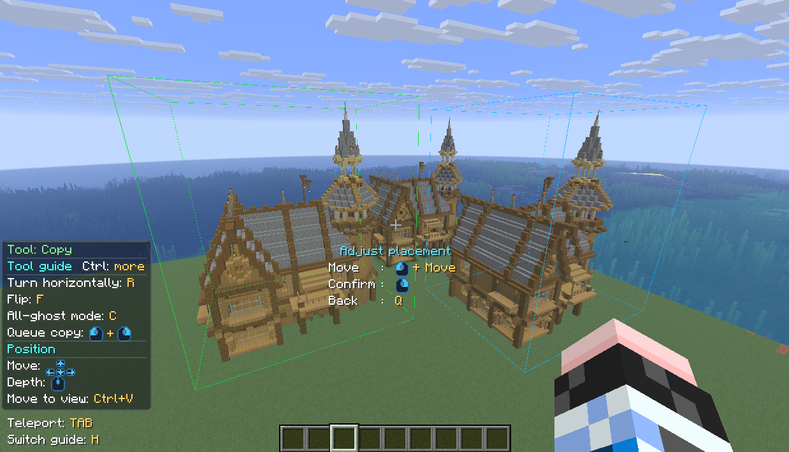
Copy ghosts: create multiple placement candidates
To place the same build in several locations, add ghosts before confirming placement. Adjust each candidate, then place them together without selecting the source again.
1. Add placement candidates
Move the ghost to the first location. While holding the left button, right-click to leave a ghost there, then keep holding left and move your player to carry the held ghost to the next location. Repeat as needed, then release left. No blocks have been placed yet. Green marks the active ghost; cyan marks other candidates.
2. Adjust individual candidates
Left-click the ghost you want to adjust and check that its outline turns green. Hold left to move it, or press R to rotate it. Releasing left keeps it active for arrow-key and wheel adjustments. You can also hold an added ghost and right-click to create another candidate.
3. Adjust the group if needed
With two or more ghosts, C switches between individual and group controls. In group mode, all outlines turn green and movement, rotation, and mirroring affect all candidates. Each ghost rotates or mirrors around its own center. The left guide names the mode that pressing C will switch to.
Holding left and right-clicking in group mode duplicates the set. The moving set stays green and the copies left in place are cyan. Releasing left makes both sets part of the group again.
4. Check and place together
Check every candidate’s position, orientation, and height above the ground. Release left, then right-click to place all candidates, in either individual or group mode. Wait for completion; the tool then waits for a new Pos1.
| Remove one added candidate | In individual mode, hold that candidate with left and press Z. This cannot remove the original ghost. |
|---|---|
| Return to selection | Q cancels placement candidates and returns to the selected source region. Holding a ghost and pressing Z in group mode also cancels the full set and returns to selection. |
Library placement supports the same additional-candidate controls.
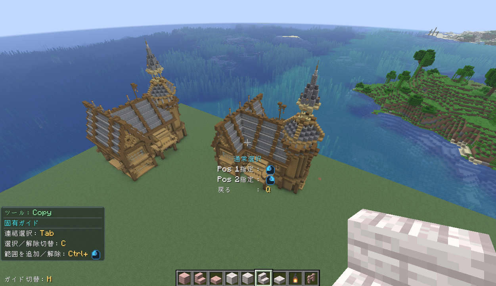
Undo and Redo
After placement completes, press Ctrl+Z to undo the world edit before starting a new selection. Ctrl+Y redoes it. If unsure, exit the tool with Q first. Close screens and placement previews and wait for processing to finish.
Once you start editing a selection, Undo/Redo affects that selection instead.
World history retains up to 20 entries per player and dimension, and is cleared when the world or server closes. New edits clear Redo. If another edit conflicts, check the notification and affected area.
Move: relocate
Move relocates the selected build. The source stays in place while you adjust the ghost and moves only when you confirm placement. You can move part of a build while leaving unselected parts in place.
1. Select the part to move
Choose Move from Left Alt and select the part you want to relocate. Leave anything that should stay outside the selection. See Selection for shared selection controls.
2. Check the destination with the ghost
Press X, then hold the ghost with the left button and move it to the destination. Fine adjustments, rotation, and mirroring work as in Copy; see Basic ghost controls. The original build stays in place during this preview. If the source selection needs changing, press Q to return to selection without moving the build.
3. Confirm the move
Check position, orientation, and height, then release left and right-click. Wait for completion. The selected blocks move from source to destination, while unselected parts remain at the source. The tool then waits for a new Pos1.
Destination blocks corresponding to source air remain. However, destination blocks overlapped by actual moved blocks are replaced, so check for overlaps. See Undo / Redo to undo a completed move.
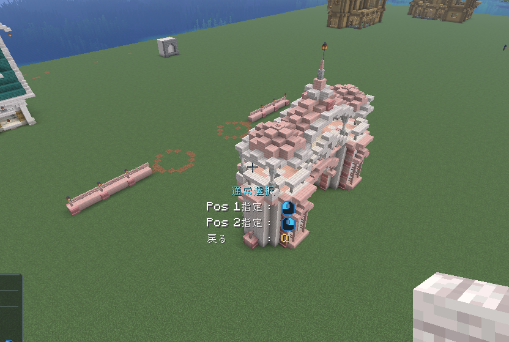
Stack: repeat
Stack repeats selected walls, pillars, floors, or other parts while retaining the source. Extend along width, height, and depth, or offset the end to create steps.
Select the repeating unit
Choose Stack from Left Alt, select the repeating part, and press X. Normal spacing follows the selection’s width, height, and depth. See Selection for selection controls.
Adjust direction and count
| Left/right arrows | Extend or retract sideways relative to your view. |
|---|---|
| Up/down arrows | Extend or retract vertically. |
| Wheel | Scroll up to extend away from your view, down toward it; reverse an extension to retract it. |
| Hold left and move | Grab the preview and move your player to extend or retract in steps matching the selection dimensions. |
Reverse an extension to remove copies. You can extend along more than one axis. Normal Stack shows height, width, and depth counts on the right.
Confirm placement
Release left if dragging, then right-click to place the copies together. After completion, the tool waits for a new Pos1. Before confirming placement, Q discards candidates and returns to the selected source region.
Offset the end to create steps
With copies present, Ctrl+arrows/wheel moves the gold-outlined end row or layer by one block. You can also hold Ctrl, grab the end with left, and move your player. This moves the whole end row or layer, rather than reshaping its surface.
Release Ctrl and extend along the length to continue from the adjusted end. Alternate extensions and offsets to create a stepped path. Retract rows without Ctrl; reversing a Ctrl adjustment only moves the end back. Existing steps remain in place.
Normal width or height adjustments after creating steps affect the entire length, including the stepped parts. The end cannot be completely disconnected or touch the previous row at just one corner. Along the length, it cannot be shifted back toward the source beyond its normal placement position. Right-side counts are hidden once Ctrl offset adjustment begins.
The default limit is 1,000,000 cells: selected cells including air × copy count. The server administrator may set a lower limit.
A confirmed batch is one Undo / Redo operation.
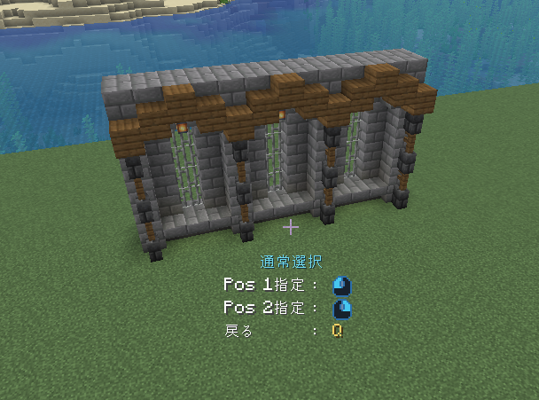
Delete: remove
Delete removes selected blocks together. Use normal selection for a build or region, or circular/rectangular shapes for rings, frames, and holes.
Delete a normal selection
1. Select the region
Choose Delete from Left Alt and select the target with Pos1/Pos2. See Selection for shared selection controls and connected selection. Check that wanted builds and ground are excluded. In Delete, C cycles normal/circular/rectangular selection instead of select/exclude mode.
2. Review before deleting
Press X to open the deletion preview. No blocks have been removed yet. Q returns to selection if the region needs adjusting.
3. Confirm deletion
Right-click to delete and wait for completion. Normal selection then returns to waiting for a new Pos1.
Delete circular or rectangular shapes
C cycles normal → circular → rectangular → normal. Shapes do not use Pos1/Pos2; adjust the displayed geometry instead. Switching from normal selection clears that selection. Switching from circle to rectangle retains position, dimensions, and rim width.
1. Set the outer size
Outside face editing, the wheel changes width and depth by the same amount. Shapes start as hollow rings or frames. Blocks in the central hole are excluded from deletion.
2. Adjust thickness
Aim at a face along the thickness axis and press Z. Use the wheel to move it; for horizontal shapes, select the top or bottom face to set deletion depth or height. Z accepts the adjustment; Q restores the state before face editing.
3. Adjust the rim, hole, and dimensions
Select a side with Z. Scroll up to thicken the rim inward and shrink the protected hole. Extending to the center targets the full interior. Scroll down to restore rim width; beyond the original width, the rim expands outward evenly.
Hold the selected side with left and move your player to stretch only that direction, creating an ellipse or rectangle while retaining thickness and rim settings. Press Z to accept face edits or Q to cancel them. Finish face editing before confirming deletion.
4. Align the shape
| Position | Hold left on the shape and move your player. Arrows adjust sideways/height; Ctrl+V brings it in front of your view. |
|---|---|
| Orientation | R rotates horizontally; F rotates vertically. |
| Check the target | Review dimensions, thickness, rim width, and contact with blocks. The central hole remains protected; the entire bounding box is not a deletion target. |
5. Confirm deletion
Release left if dragging, then right-click to delete and wait. A successful shape deletion exits Delete. Before deletion, Q returns to normal selection without deleting. A rectangular frame can retain a central pillar, while thickening a circle to its center creates a fully cleared round hole.
See Undo / Redo to reverse a completed deletion. The default limit is 1,000,000 non-air blocks per deletion. The server administrator may set a lower limit.
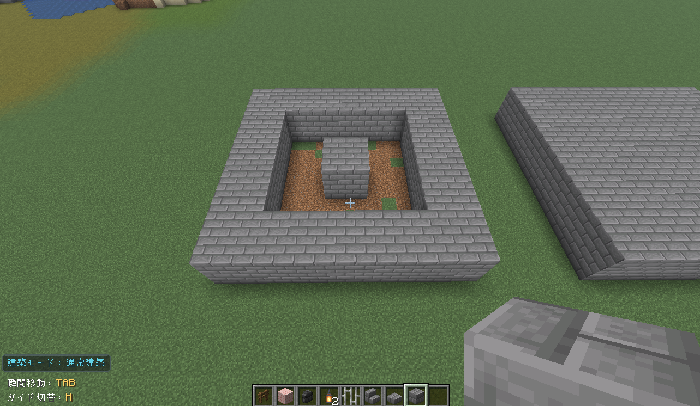
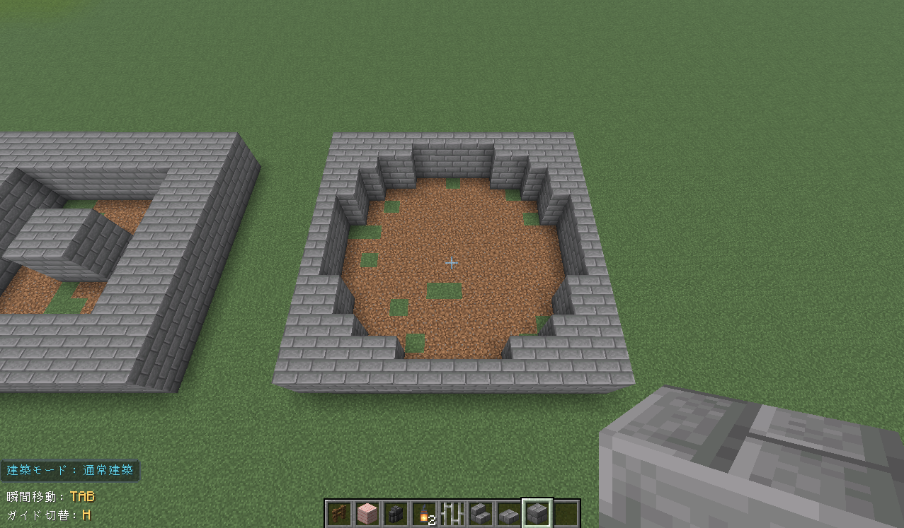
Material Rack
V opens/closes the rack. Blocks finds materials; Sets saves material combinations for a build or task. The following controls apply with Build Atelier enabled in Creative mode.
Blocks: find materials
| Category | Filter by families or uses, such as building, natural, or light-source blocks. |
|---|---|
| Type | Filter by properties or shape, such as full blocks, stairs, slabs, and transparent blocks. |
| Color | Filter by visible color; combine this with category and type. |
| Name / ID search | Search by material name or ID. Press Esc to leave text input before using shortcuts. |
| Left-click | Select the material for direct use without changing hotbar contents. See Build with the rack open. |
| Drawer / reset | Use the upper-left arrow to collapse or expand. Reset restores filters and scroll positions and returns Sets to the first set, without deleting saved sets or materials. |
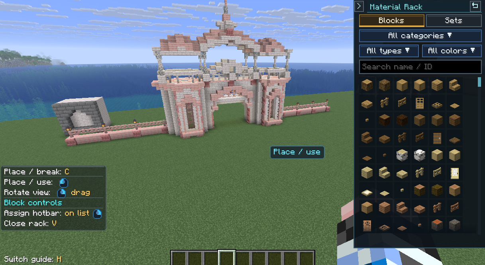
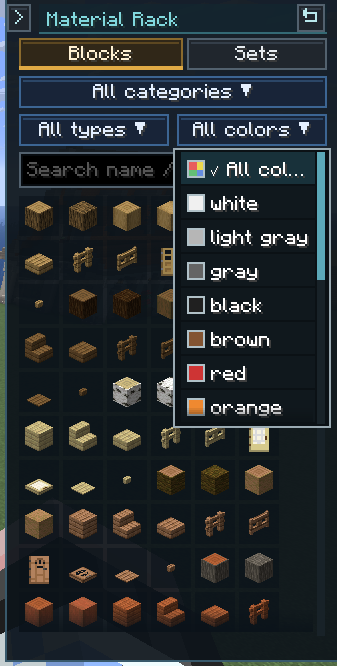
Assign materials to the hotbar
Right-click a material to open the assignment bar. This works from both Blocks and Sets.
| Select | Left-click toggles materials. Drag from empty space to select a rectangle; Ctrl+left-drag adds or removes materials along the stroke. Select up to nine types. |
|---|---|
| Assign | Drag selected materials onto a slot in the assignment bar. The yellow destination preview marks slots that will be overwritten. |
| Quantity | Normally one item each; hold Shift when dropping for one full stack each. |
| Reorder the hotbar | Drag items between assignment-bar slots to reorder the actual hotbar. |
| Move / close bar | Drag the bar’s frame to move it. Right-click or Esc ends assignment. |
| History | Inventory assignment, overwrites, and reordering are not covered by world Undo / Redo. |
Assign to the inventory
Press E to open the inventory alongside the rack, or press V to show the rack while in an inventory screen. In Creative, use the inventory tab to show the main 27 slots.
| Select materials | Left-click toggles materials; drag from empty space for a rectangle. Select up to 27 types. |
|---|---|
| Drag to destination | Drag selected materials to inventory slots. Main storage receives the selection; hotbar drops use the first nine types. Slots continue right, then to the next row, wrapping within the same region. Yellow destination slots are overwritten. |
| Quantity | Normally one item each; Shift when dropping assigns full stacks. |
| Use empty main slots | Shift+right-click in inventory mode assigns one of each selected type to empty main-storage slots, or the hovered material if none are selected. |
| Inventory mode | Clicks select materials for assignment rather than direct building. World placement/breaking and manual reordering are suspended. Inventory changes are not covered by world Undo / Redo. |
Sets: collect materials for a build
Create a named set with New, then open Add to set. Filter and select materials, choose Register, and review before confirming. Filters can change without losing selections.
| Select / deselect | Left-click materials or drag across them in registration mode. |
|---|---|
| Register | Review the selected materials, then confirm Register. |
| Choose again | Return to selection while retaining filters and selected materials. |
| Switch sets | Open the set-name dropdown. Hover a name for a material preview. |
| Rename / delete set | Use the pencil or × in the dropdown. Deleting a set requires confirmation. |
| Remove materials | Choose Remove, select registered materials, and confirm. This removes set entries rather than world or inventory blocks. |
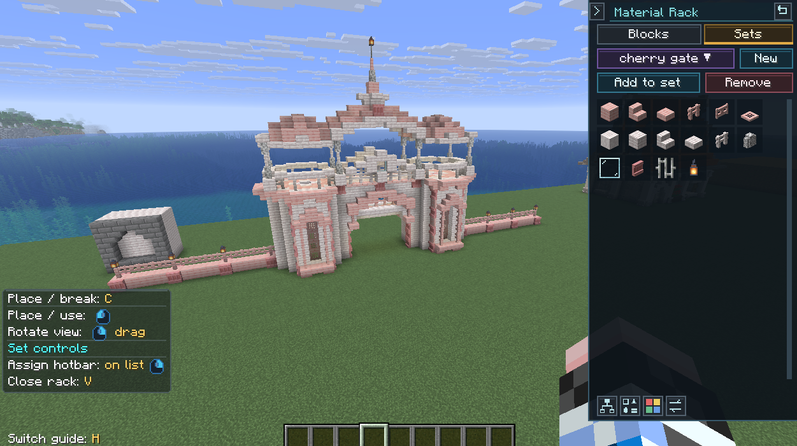
Sort materials in a set
| Material sort | The first bottom icon groups related materials. |
|---|---|
| Type sort | The second groups forms such as full blocks, stairs, and slabs. |
| Color sort | The third orders by visible color. |
| Manual reorder | The fourth icon enables dragging materials to new positions. It lights up and displays the reorder status. Click again to return to material selection; closing the rack also turns it off. Clicks during reordering do not change the active building material. |
Build with the rack open
While the rack is open, aim the mouse cursor at the world block you want to operate on. Placement uses the pointed face; breaking and using act on the pointed block.
| Select rack material | Left-click in Blocks or Sets. The material gets a cyan outline and the hotbar selection frame dims. Turn off manual reorder in Sets first. |
|---|---|
| Return to hotbar | Select a hotbar slot with its key, a click, or wheel scrolling outside the rack list. The rack outline clears. Closing the rack also returns to the hotbar. |
| Scroll the rack | Scrolling over the material list scrolls it without switching to the hotbar. |
| Place / use | Left-click a world target to place the active material or use the target block. |
| Break | C switches between place/use and break. The cursor mode label identifies the active mode. Material selection is retained while breaking. |
| Camera | Hold right in the world and move the mouse to rotate the view; release to resume cursor control. |
| Prioritize placement | Shift+action bypasses target interaction and prioritizes placement. |
| Pick block | Minecraft’s Pick Block control (middle mouse by default) picks the cursor target and switches back to the hotbar. |
| Undo / Redo | Use Ctrl+Z / Ctrl+Y with the rack open. See Undo / Redo. |
These are default mouse controls. Follow the in-game guide if camera/action buttons were changed. In Survival the rack is a browsing catalog; Creative material generation and assignment are unavailable.
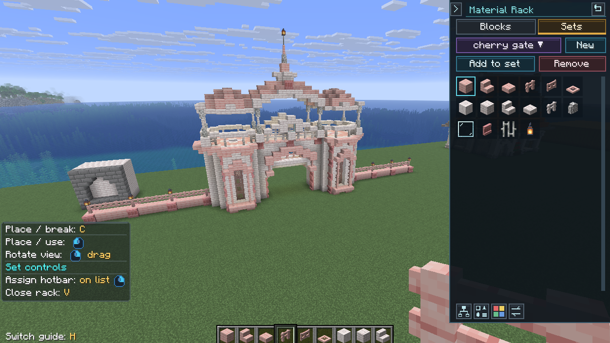
Library, sections, and materials
Save builds as library entries, organize them, define sections, replace materials, and reuse them elsewhere. Open Library from Left Alt. Survival uses saved reference ghosts.
Save and organize builds
Choose New → Register a library entry, select a region, and confirm with X. Enter a name, optionally set a category and tags, then save. Select an entry to inspect it: left-drag pans, right-drag rotates, the wheel zooms, and R resets the view.
| Find and organize | Search by name or filter by category and tag. Right-click the list to create or rename folders. Drag entries into a folder. |
|---|---|
| Multiple entries | Shift selects a range; Ctrl adds or removes individual entries. |
| Delete | Delete in the library list permanently removes the selected entries after confirmation. World Undo cannot restore them. |
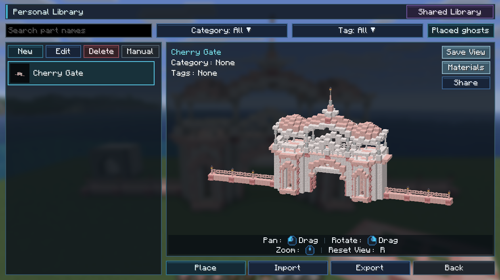
Define build sections
Select an entry, then Edit → Sections. Choose Add, name the section, then choose Assign, select blocks in the preview, and Confirm. Continue assigning or removing membership, then choose Done to return to the section list. Removing membership does not delete blocks from the saved build. Unassigned blocks belong to the unclassified section.
| Single | Click to select or deselect; Ctrl+left-drag brushes over multiple blocks. |
|---|---|
| Same | Select blocks of the clicked type throughout the structure. |
| Connected | Select face-connected blocks of the same type. |
| Cuboid | Left-click Pos 1, right-click Pos 2; use Z for face adjustment. |
| Visible sections | Hide overlapping sections to inspect the target. |
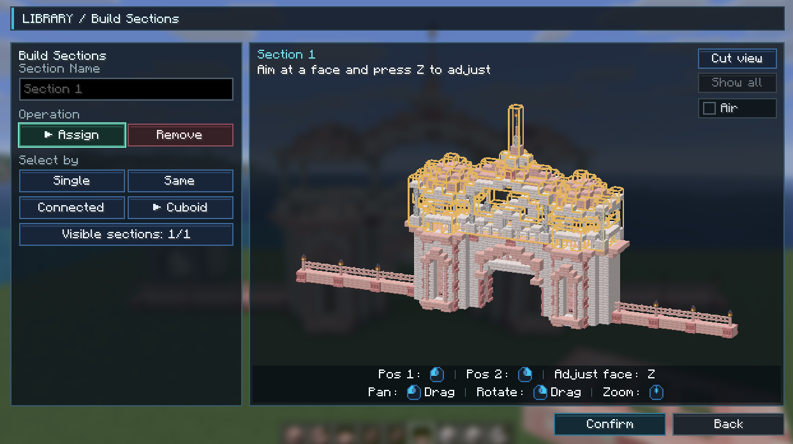
Replace materials
Edit → Replace opens a preview of the saved build. Select Original material and Replacement. Use Add Tab to replace several materials, such as planks, stairs and slabs. Selecting candidates does not modify the world.
| Reset | Reset the selected tab or all tabs; delete tabs that are no longer needed. |
|---|---|
| Save as | Keep the original and save the replacement as another entry. |
| Update | Update the selected entry with the replacement result after confirmation. Choose Save as to keep the original as well. |
| Place | Continue to placement using the replacement result. |
| Supported materials | Only compatible candidates appear. Shelves can be replaced with other shelves while retaining their contents; this does not enable arbitrary container replacement. |
Choose sections and place
Select an entry and choose Place. Check the sections to include. In Creative, start placement, adjust the ghost, then right-click to place actual blocks. See Ghost basics for shared controls.
Include air appears when applicable and includes saved air in the selected sections, clearing existing blocks at those positions. Check the destination before confirming. See Undo / Redo for reversing placement. In Survival, place a ghost of the library build to use as a building reference.
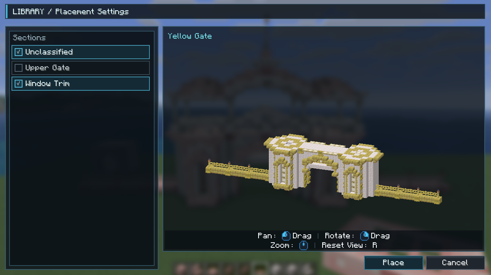
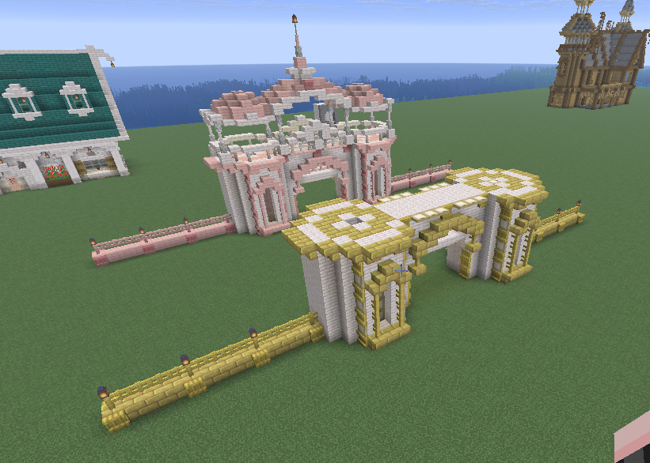
Materials and stock counts
Materials lists required quantities and filters them by section. Show stacks switches between item counts and stacks; for example, 1s52 means one stack plus 52 items. Export Materials saves the list as text (.txt) or Excel (.xlsx). Show in world keeps the list visible while building.
| Count stock | Open inventory and use Count on the list. Choose inventory only or include placed storage. |
|---|---|
| Storage selection | Right-click chests, barrels or shulker boxes to select or deselect them; select up to 16. X confirms; Q or Esc returns. |
| Results | Green means enough stock; red indicates a shortage. Click the quantity heading to switch between stock/required and missing quantities. Recount after contents change. |
| Reset count | Clear the count and selected storage, retaining the required-material list. |
| Clear list | Clear the displayed list and count without deleting library entries or inventory items. |
| Visibility | Toggle world visibility independently of resetting the count. |
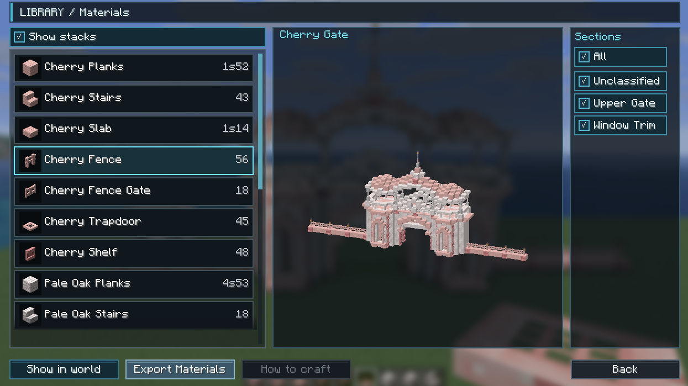
Export and import
Export selected entries or folders as an .mbslib package. Review the contents, package name and output folder. The default destination is build_atelier/library/exports under the game folder. Import opens an .mbslib file for review before adding its entries. Existing entries do not need to be deleted first.
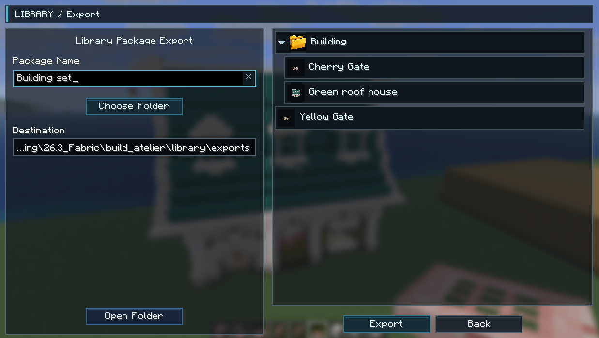
Share within a server
Select an entry and choose Share, then confirm. Shared Library lists builds on the connected server. Inspect an entry and acquire it into your personal library; use Refresh to update the list. Deletion is limited to entries you have permission to delete.
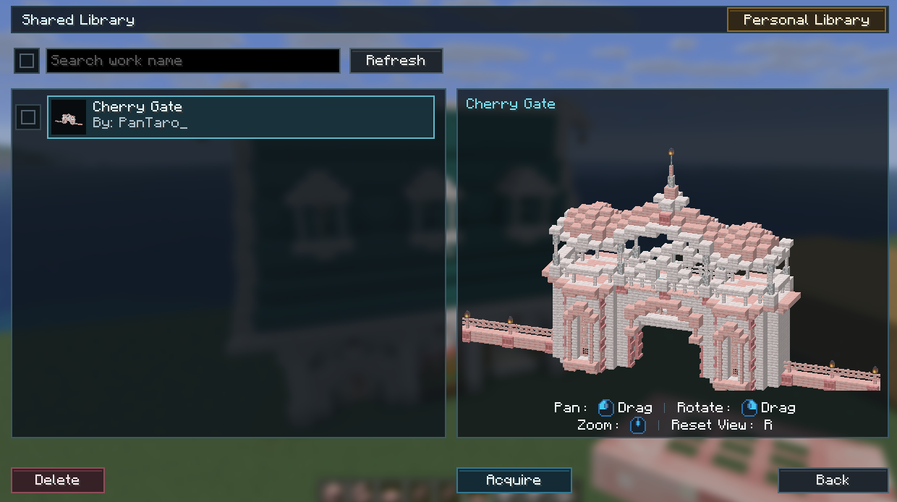
Saved reference ghosts
In Survival, choose Place on a library entry, select visible sections and opacity, then start ghost placement. Adjust its position and orientation, release the left mouse button and right-click to fix the reference ghost. Place the real blocks yourself.
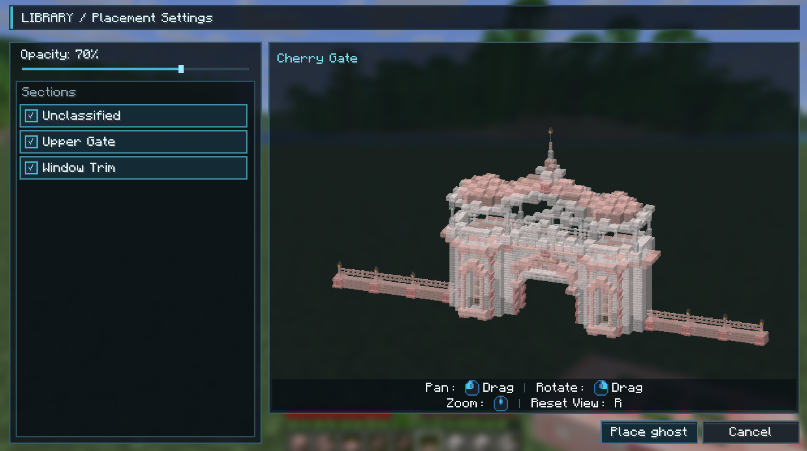
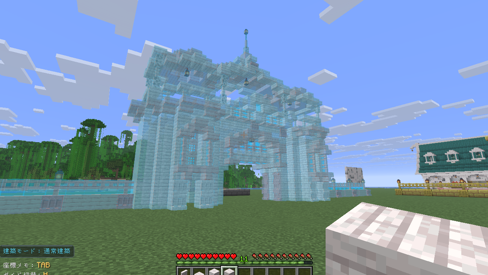
Build against the reference
Aim at the ghost to see the required block name. A correctly placed block with the expected state replaces the ghost at that position. Incorrect blocks or states are marked pink so you can correct them.
Show by height
During normal play, aim at a visible ghost. Right arrow shows the ghost from the bottom up to the selected height. Up/down changes that height one block at a time; left arrow restores the full view. These controls do not apply while another tool or screen is active. B → Ghost controls also explains them.
Manage placed ghosts
Open Placed ghosts at the top of Library. Click the eye icon beside a ghost in the list to hide or show it. Select a ghost to adjust opacity or reposition it. Remove deletes only the reference ghost, leaving actual blocks untouched. Use Materials and stock counts to prepare supplies.
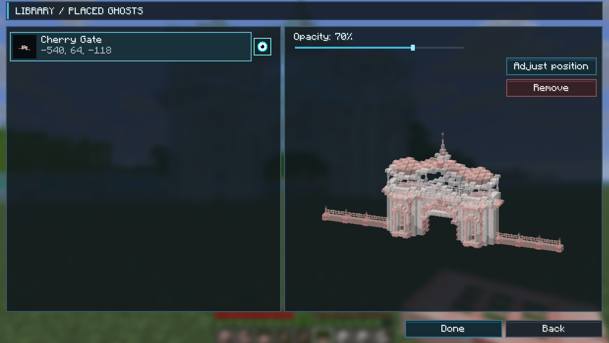
Shapes
Open Shape Generator from Left Alt, choose a shape and material, then place it. Adjust size, thickness, hollow/solid and full/half variants. See Roofs for roof-specific controls.
Choose a shape and material
Choose Circle / Semicircle, Sphere / Hemisphere, Rectangle or Cuboid. Select a supported material, set dimensions and confirm to show a ghost. This does not place real blocks. Search and category/type/color filters help locate materials; supported materials also offer state controls.
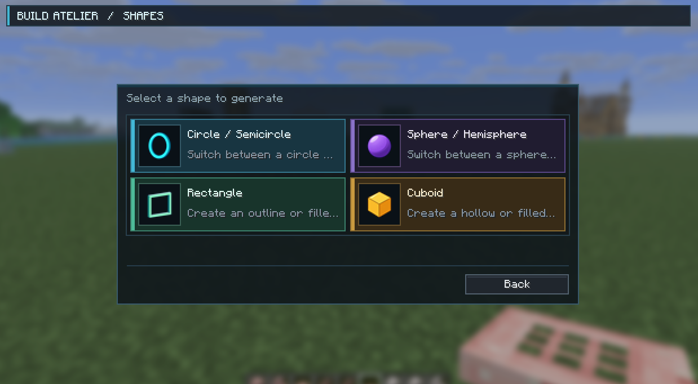
Adjust size and fill
| Wheel | Resize the diameter of circles/spheres, the two planar dimensions of rectangles, or all three cuboid dimensions. |
|---|---|
| C | Toggle hollow/solid outside face editing. |
| Position and rotation | Use arrows, grab-and-move or Ctrl+V to position the ghost. R rotates horizontally; F rotates vertically. The wheel changes size rather than position. |
Adjust a face or rim
Aim at a face and press Z. The selected face is highlighted. Wheel adjustments change dimensions, thickness or rim width depending on the shape and face. Z accepts; Q restores the state before face editing.
| Rectangle / cuboid | Move the selected face with the wheel. Hollow rectangle sides instead adjust the rim. |
|---|---|
| Circle / semicircle thickness | Select a face perpendicular to the circle plane and adjust its extrusion thickness. |
| Hollow circle / rectangle sides | Wheel scrolling adjusts the rim uniformly. To stretch only one direction, hold the drag button on the selected side and move the player. This makes an ellipse or rectangle while retaining the opposite side, thickness and rim setting. |
| Finish a side drag | Release to stop dragging; Z accepts face edits, Q cancels them. The default drag button is left mouse; custom bindings are respected. |
| Sphere / hemisphere | Use normal size adjustments; face editing is unavailable. |
Use half variants and rotation
X switches full/half variants. Rectangles cycle full → horizontal half → vertical half → full. Combine thickness and rotation to build arches or tunnel shapes.
Keep or clear existing interior blocks
With Include air off, existing blocks inside a hollow shape remain. Turn it on to clear the targeted interior during placement; the preview marks existing blocks to remove in red. This setting does not apply to solid shapes.
| Place | Leave face editing and right-click to place the displayed shape. Inspect both the material and removal preview first. |
|---|---|
| Back | Q in normal preview returns to material settings. |
| Undo / Redo | Both placement and interior clearing are covered by Undo / Redo. |
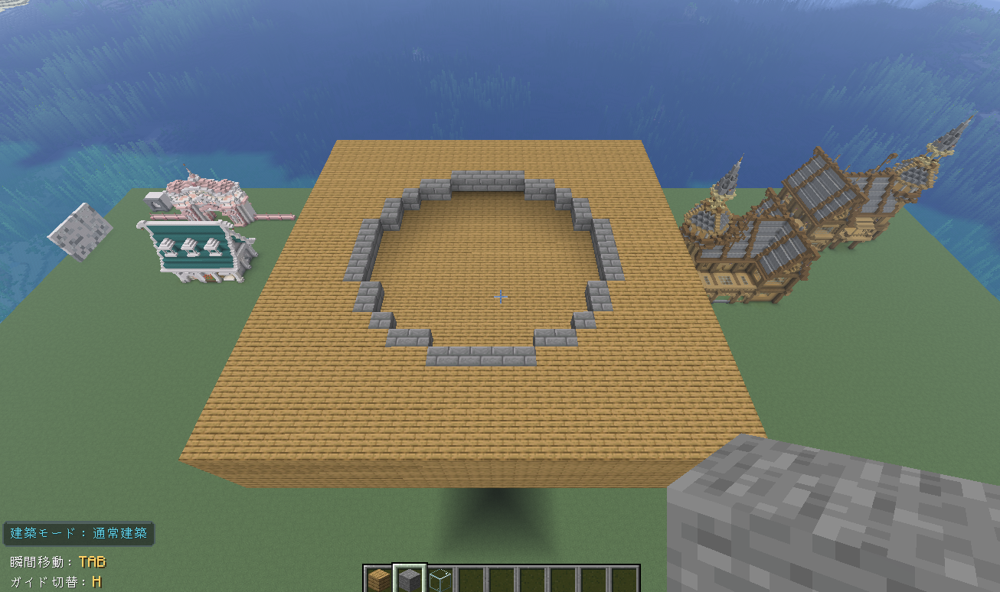
Roofs
Open Roofs from Left Alt, then select a roof type and material. Each type uses different shape-editing controls.
Pointed roofs / Profile roofs / 4-way roofs / Position and place
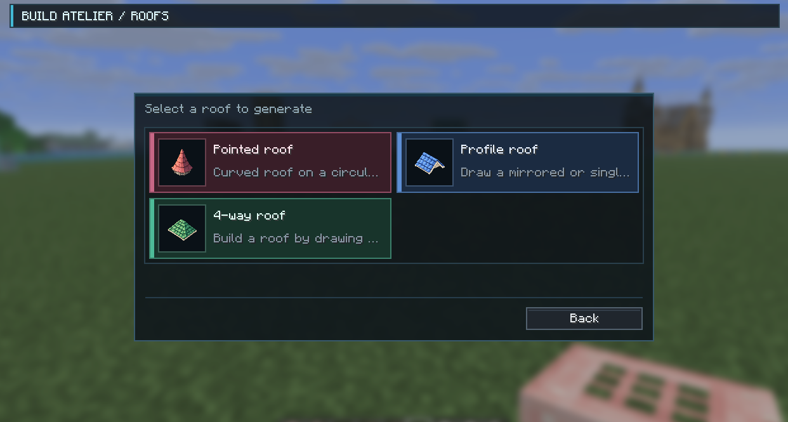
Pointed roofs: diameter, height and curve
After choosing material, use the wheel to resize the circular base. Z starts height editing; the wheel then changes height. Z accepts the height edit and Q cancels it. C switches between weak and strong curves, changing the outline at the same diameter and height. Q outside height editing returns to material selection.
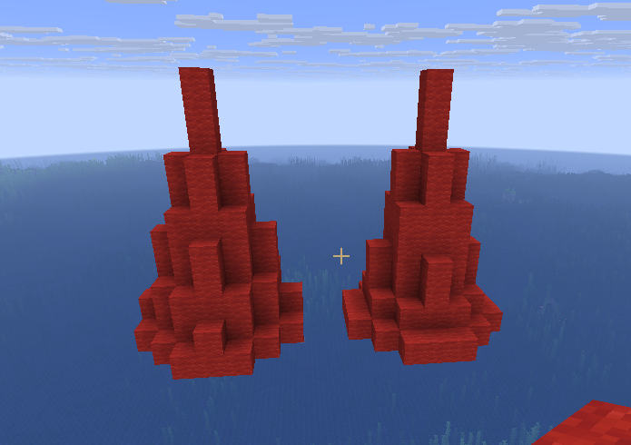
Profile roofs: draw a profile and extend its depth
Profile roof creates a mirrored or single-slope roof from a cross-section. Use the wheel to set the profile width, then arrows to draw its outline. Arrows edit the profile rather than moving the whole roof. The first width expansion uses your viewing direction to orient the profile.
| Arrows | Advance one block up, down, left or right. The opposite of the last move undoes that step. |
|---|---|
| Ctrl+arrows | Skip placement at the departing position without removing existing real blocks. |
| C | Switch Mirrored / Single slope while retaining the edited profile. |
| Depth | Aim at a depth face and press Z. Scroll to extend or retract the roof. Z or Q returns to profile editing. |
| Inner fill | Aim at a left/right side and press Z. Scroll up to fill one more column from the edges toward the peak, or down to remove added columns. Symmetric roofs fill both sides. |
4-way roofs: move rings vertically and inward or outward
Use the wheel to expand the base ring in width and depth. Build a stepped roof by moving rings upward and inward.
| Up / down | Advance the current ring one block vertically. |
|---|---|
| Right / left | Advance inward / outward by one block. |
| Reverse the last arrow | Undo the last step. Up immediately followed by down returns to the previous ring. |
| Ctrl+arrows | Skip placement of the departing ring. |
| Ring colors | Yellow marks the current ring; cyan marks the previous position. |
| Make a rectangle | Aim at a side and press Z, then scroll to resize that side while retaining the route. Z accepts; Q cancels that face edit. |
Rings do not automatically fill or clear the interior. Q during route editing returns to material selection.
Position and place the roof
After shaping the roof, adjust its position and orientation. Profile and 4-way roofs use arrows for shape editing, so use grab-and-move or Ctrl+V for positioning.
| Move | Hold the drag button (left mouse by default) and move the player. |
|---|---|
| Move to view | Ctrl+V moves the roof in front of you. |
| Rotate | R rotates horizontally by 90 degrees. |
| Place | Finish shape adjustments and right-click to place the displayed roof. |
| Undo / Redo | See Undo / Redo to reverse placement. |
These are default controls. Follow the on-screen guide for customized keys or mouse buttons. See Ghost basics for shared operations.
Replace and Weathering
Replace / Weather changes materials in an existing world build. Replace swaps selected materials throughout the target; Weathering changes a chosen proportion of exposed blocks using a mixture of materials.
Select the target / Replace / Weathering settings / Manual edits / Apply
Select the target
Choose Replace / Weather from Left Alt, select the region and press X. Face adjustment and add/exclude controls are shared with Selection. The selected build appears in a 3D preview. The Replace and Weathering buttons at the top switch modes.
Replace materials throughout the target
Select Original material and Replacement. Use Add Tab for other materials such as planks, stairs or fences. Inspect the preview, then choose Apply to update the world.
| Reset Tab | Clear the selected tab’s replacement. |
|---|---|
| Delete | Remove an unnecessary tab. |
| Reset All | Clear all replacement settings. |
| Preview controls | Left-drag pans, right-drag rotates, the wheel zooms and R resets the view. |
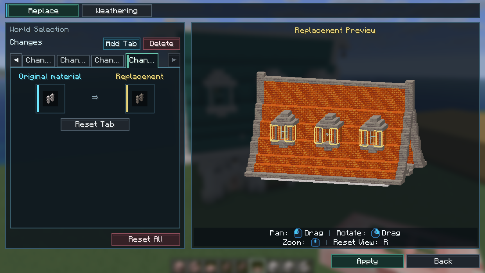
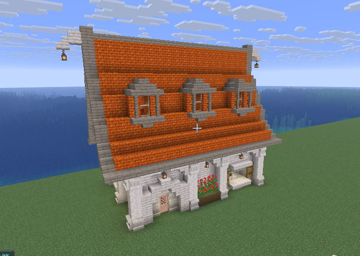
Set coverage and material shares
Switch to Weathering, choose Source materials, then choose Weathering materials. Both lists support multiple selections.
| Sources | Only the selected original material types are eligible. |
|---|---|
| Coverage (%) | Set the proportion of eligible blocks to change. |
| Share (10) | Use numeric fields or bars to set the material mix. Other shares adjust to keep the total at 10. |
| Add / remove materials | Reopen the material picker or remove a material using its card’s × button. |
Automatic weathering affects selected source blocks exposed to air, including interior surfaces. It does not automatically identify exterior walls. To preserve interiors, select only the outer layer when defining the target region.
The screenshot uses 60% coverage with Birch Wood 3 : Diorite 7. Coverage controls how many eligible blocks change; Share controls the mix used for those changes. Reroll changes the distribution while retaining coverage and shares.
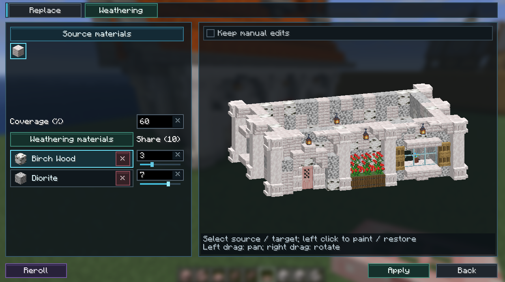
Edit individual blocks in the preview
Select an original-material thumbnail and a weathering-material card, then click a target block in the preview. It changes to the selected weathering material. Clicking a block already using that material restores the selected original material. Only cells whose original material is in the source list are editable. Left-drag still pans the preview.
Enable Keep manual edits before rerolling to retain manual changes, including blocks restored to an original material. With this option off, rerolling also resets manual edits.
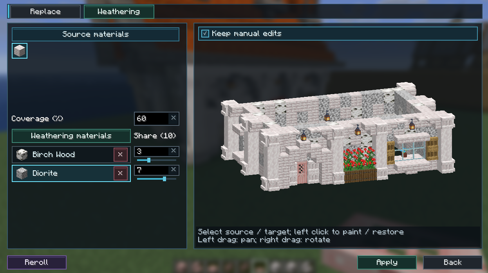
Apply to the world
Inspect the result and choose Apply. Back or Esc returns to selection without applying changes. Wait for an in-progress application to finish. Use Undo / Redo to reverse applied world changes.
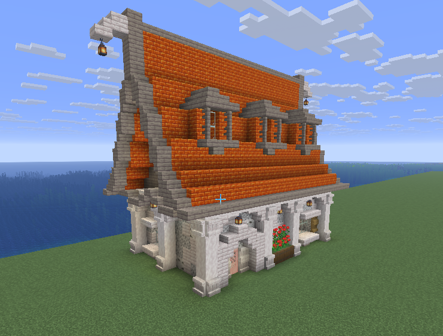
Bend and extend
Bend reshapes a selected build in Bend original mode, or preserves it and adds a new section in Extend & bend mode. Use it for curved roads, slopes and solid or hollow volumes.
Selection / Bend original / Extend & bend / Options
Select the source
Choose Bend from Left Alt, select the region and press X. Selection controls are shared with other tools. Include road borders if they should bend with the surface. The ghost and handles appear after confirmation.
Bend the ends, middle and height
Aim at an end handle, hold left-click and move your player. The opposite end anchors the bend. Release to retain the shape without placing it. Middle handles adjust the interior while retaining the ends; long selections have multiple middle handles. End and middle adjustments can be combined.
Fly up or down while holding a handle to change its height. Moving an end creates a slope; moving the middle creates a rise or dip while preserving end heights.
| Move the whole ghost | In Bend original mode, drag away from handles to move the whole result. See Ghost controls. |
|---|---|
| Select a handle with Z | Aim at a handle and press Z to enter editing. Use the wheel and arrows for fine adjustment, then Z to retain the shape and finish editing. |
| Back with Q | While editing a handle, Q cancels that adjustment. Outside handle editing, Q discards the unplaced result and returns to selection. |
Finish handle editing and right-click to place. Bend original replaces the selected source blocks with the result. See Undo / Redo for reversing a completed placement.
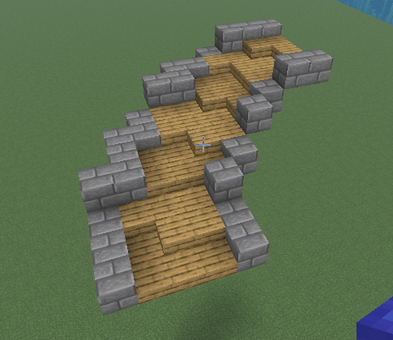
Extend from the source
Outside handle editing, press C to switch to Extend & bend. Grab an end handle and move your player to pull out a new section. Movement controls its length and curve; flying up or down changes the end height. Release to retain the shape. Finish handle editing and right-click to place only the added section, leaving the source intact. Before placement, returning to selection with Q discards the extension.
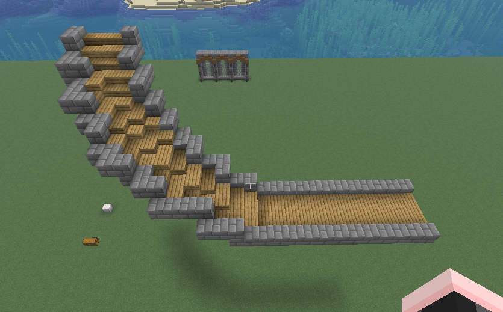
Step Assist, end-section orientation and overwrite
| F: Step Assist | Cycles Off → Stairs → Slab. Adds matching blocks at steps where the source material supports them. Inspect the preview; materials without a matching variant are not corrected. |
|---|---|
| V: End cross-section | For volumes, switches Keep facing / Follow curve. Not shown for a single-layer floor. Release the handle before switching. |
| R: Rotate | Rotates the Bend original result horizontally in 90-degree steps. |
| X: Overwrite | Toggles replacement of existing destination blocks. After selection confirmation, X controls overwrite. |
Keep facing shifts sections without changing their orientation; Follow curve follows the bend direction. This does not rotate individual block models to arbitrary angles. Horizontal slab roads retain upright floor models; Follow curve affects horizontal cross-section orientation.
The source bounding volume is limited to 100,000 cells. Fluids, storage blocks, two-block structures such as doors and beds, and decorations such as item frames are unsupported. Deformations stop when connections cannot be maintained; adjust the handle or selection.
Passages and channels
Passages and channels extrude a chosen cross-section along connected straight and curved segments. Keep the interior empty or fill it with water or building materials.
Cross-section / Route / Caps and fill / Placement
Choose material and cross-section
Choose Passages & Channels from Left Alt. Select the shell material, Circle / Rectangle and Full / Half. Half keeps the lower part for an open channel. Before extension, the wheel resizes the section; aim at a side and press Z to adjust its width or height independently. On the top face, wheel up raises the top and wheel down lowers it. Z retains the adjustment; Q cancels it. R and F rotate the initial section horizontally and vertically. Size and whole-object rotation lock after extension. See Ghost controls for positioning.
Connect straight and curved segments
Aim at an end face and press Z to enter extension editing. Use the wheel or hold left-click on the end and move your player. Straight mode extends perpendicular to the face and highlights the end in yellow. Press C to switch to curved mode; a nonempty segment is retained and a new one starts. Drag sideways to curve, or fly up/down to change height. The curved end is purple. Press C again to continue with a straight segment.
| Return to a previous segment | Shrink the current segment to zero, then continue retracting to edit the previous segment. The return face is cyan. |
|---|---|
| Z | Retains the route and ends extension editing. |
| Q | Cancels changes since entering the current Z editing session. Outside editing, returns to material selection. |
Right-click places the whole passage, including while extension editing is active.
Set caps, fill material and depth
Press X to open passage settings without losing the route or position.
| Start / end cap | Closes either end independently using the shell material. |
|---|---|
| No fill | Clears the interior to air, including existing world blocks. |
| Buckets | Open the choices for water, lava, and powder snow. Opening the choices alone does not change the fill. The last material selected becomes the fill, shown in bold yellow in the Fill field. The corresponding category button is highlighted in light blue. |
| Block material | Fill with eligible building materials such as blue ice or magma blocks. |
| Depth | Number of layers from the floor of each cross-section. |
| Apply / Cancel | Apply updates the preview; Cancel discards setting changes. Neither places the passage. |
Water and lava can flow out of open ends. Close the ends to retain them. After placement, flow and effects on the surroundings follow Minecraft behavior. Choose Pick depth in world to preview the fill and adjust its depth with the wheel. Q cancels the depth adjustment and returns to settings. Right-click in this mode confirms the depth and places the entire passage.
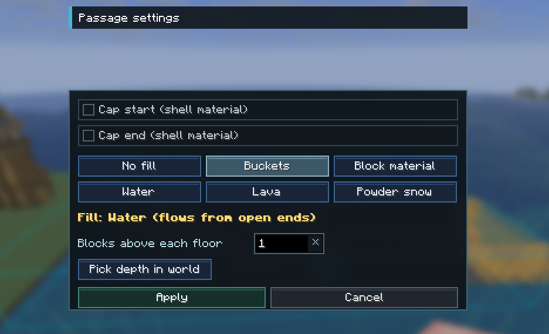
Place the result
Shell and fill materials are independent. Use water for a channel, blue ice for an ice course, or other blocks for a filled passage. Shell, interior clearing, caps and fill form one placement. See Undo / Redo for reversing it.
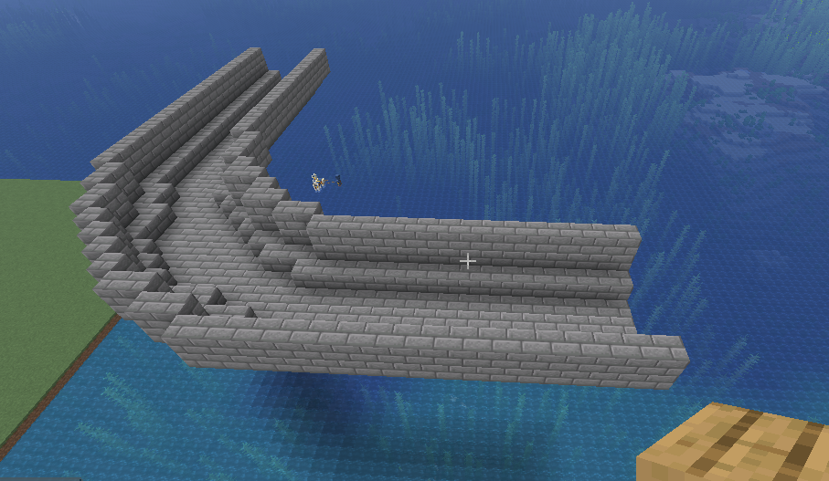
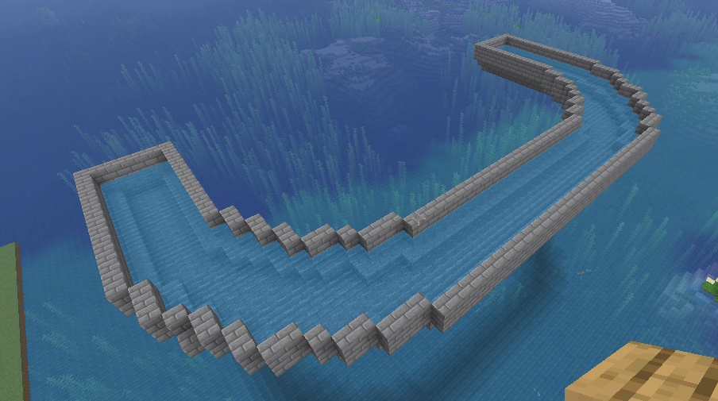
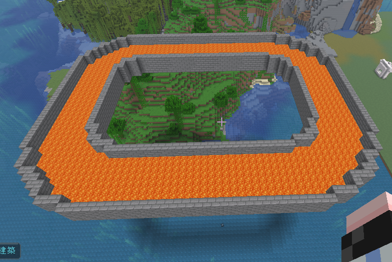
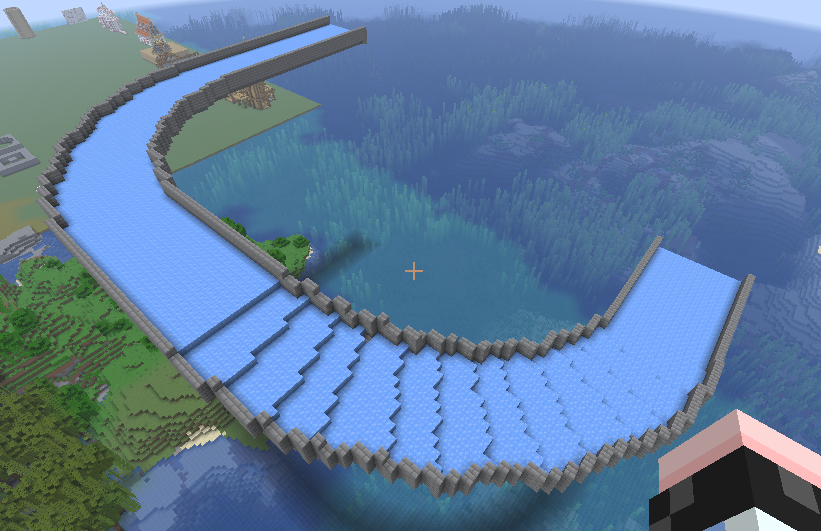
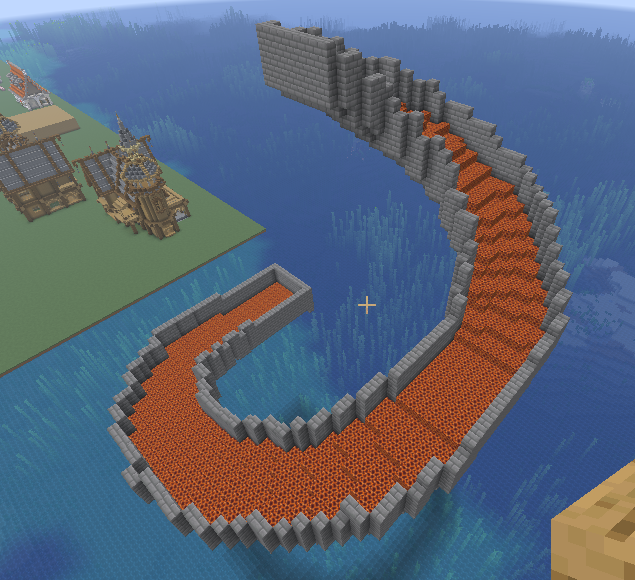
Building modes with G
With Build Atelier enabled in Creative, G switches between normal building, replacing a targeted block, batch placement, and editing existing block states.
Switch modes / Replace / Special placement / State editing
Switch building modes
Hold G to open the menu, move the cursor over a card, and release G to select it. Tap G to cycle Normal → Replace → Placement → State edit.
| Normal | Use normal Minecraft placement and breaking. |
|---|---|
| Replace | Replace the targeted block with the held material. |
| Placement | Connect candidate blocks, adjust their orientation and state, then place them as a batch. |
| State edit | Select existing blocks and change their orientation or state. |
Mode switching is unavailable while a special-placement preview or request is pending. Tools such as Copy take priority while active; ending the tool restores the previous building mode.
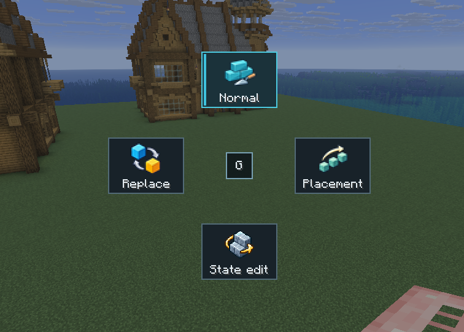
Replace a targeted block
Hold the replacement material, aim at a block and right-click to replace it in place. Hold Ctrl and right-click for normal placement instead. Ctrl here means the default shared modifier; use Shift if sneak is bound to Ctrl. The same modifier applies to skipped placement cells and adding or removing selections below.
Connect candidates and place a batch
Hold the material and aim at an existing block face. Right-click to lock the initial candidate, then extend the preview with arrow keys and the wheel. No blocks are placed until confirmation.
| Left / right arrows | Add candidates sideways. |
|---|---|
| Up / down arrows | Add candidates vertically; slabs advance in half-block steps. |
| Wheel | Up adds away from you; down adds toward you. |
| Move back | Move back toward the previous candidate to return to editing that block. |
| R | Rotate the current candidate right by 90 degrees. |
| F | Cycle supported states, such as upright / upside-down stairs or bottom / top / double slabs. |
| Ctrl + arrows / wheel | Leave the current candidate position empty and add a candidate at the next position. |
| Right-click / Q | Right-click places the batch. Q discards unconfirmed candidates. |
Combine orientation changes and skipped cells for spaced decorations or roof edges. R and F adjust the current candidate rather than rotating the whole batch.
Edit existing block states
Left-click selects a block or Pos1; right-click sets Pos2. Ctrl + left-click adds or removes separate selections. Clicking an already selected target activates its range.
| Z + wheel | Adjust a selected range face; press Z again to finish adjusting. |
|---|---|
| R | Rotate supported selected blocks right by 90 degrees. |
| F | Cycle supported block states or vertical orientation. |
| Q | Clear the selection and finish editing. State edit mode remains active. |
No selection confirmation is required: each R or F operation changes the world immediately. F also cycles repeater delay and comparator compare / subtract mode. See Undo / Redo to reverse edits.
Locations
Locations save a personal name, coordinates, dimension, view direction and thumbnail. Creative supports teleportation; Survival provides coordinate notes and target navigation.
Register / Manage and update / Teleport / Survival navigation
Register your current location
Open the Left Alt tools screen and select Locations in the upper-right corner. In Survival, Tab opens coordinate notes. Stand at the position and face the view you want to save, then choose New → Save Current Location, enter a name, then choose Save. Select its card to see the thumbnail, name, dimension and coordinates.
Organize and update saved points
Search by name or dimension. Use New to create a folder, drag cards to organize them, and use the arrow beside a folder to expand or collapse it.
| Rename | Changes the selected location name. |
|---|---|
| Update to current position | Opens a confirmation before replacing the saved coordinates, dimension, view direction and thumbnail with your current location. The name stays unchanged. |
| Delete | Review the selected points or folders in the confirmation screen before deleting them. |
| Folders and order | Drag cards to change their order or folder. |
Choose Update in the confirmation to apply the change, or Cancel to return without changing the saved record.
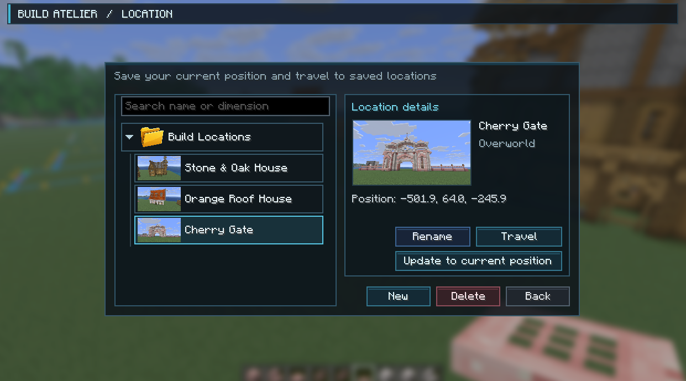
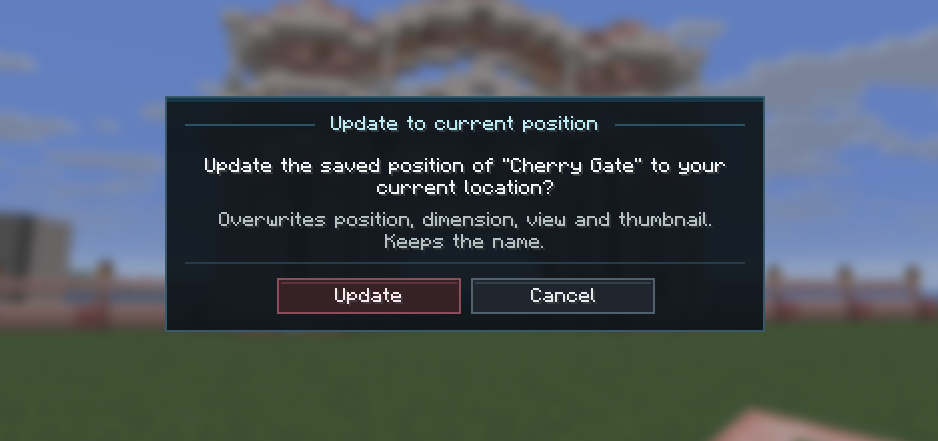
Creative: teleport to a saved point
Press Tab during normal play to open the travel list. Click a card once to teleport and close the list. You can also select a location in the management screen and press Travel. Close the travel list with Tab or its upper-right ×.
In multiplayer, tap Tab for Locations or hold it for the Minecraft player list. Other Tab actions, such as switching selection modes, take priority when applicable.
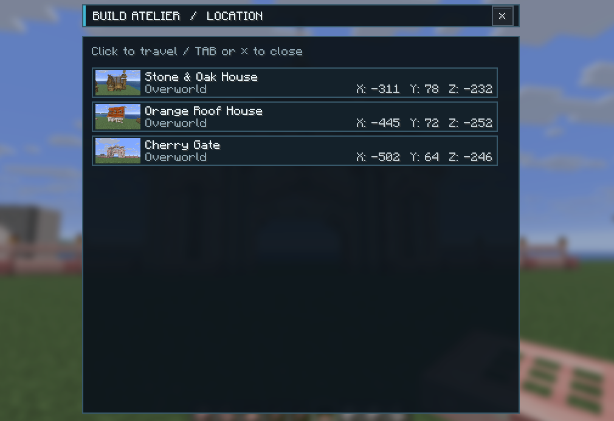
Survival: choose a navigation target
Press Tab to open coordinate notes, select a saved point and press Set target. The card gains a [Target] mark and the button becomes Clear target. Only one target is active; setting another point replaces it. Survival navigation does not teleport you.
After closing the screen, the target name and coordinates appear below the crosshair. Text becomes clearer as you face the target and dimmer when facing away, but remains visible. Left or right arrows indicate which way to turn.
| Horizontal distance | Straight-line horizontal distance to the target, not walking-route length. |
|---|---|
| Height difference | Shown on the same line as distance when the target is above or below you. |
| Direction and opacity | Uses horizontal facing only; looking up or down alone does not dim the text. |
| Other dimension | Shows the destination dimension instead of arrows, distance and height difference. |
Reopening coordinate notes selects the target, expands its parent folders and scrolls its card to the top of the visible list. Saved order and folder membership remain unchanged. To stop navigation, select the target card and press Clear target. Leaving the world also clears navigation, while keeping the saved point.
Target navigation works in Survival whether BA is on or off. It indicates direction rather than finding a route around obstacles.
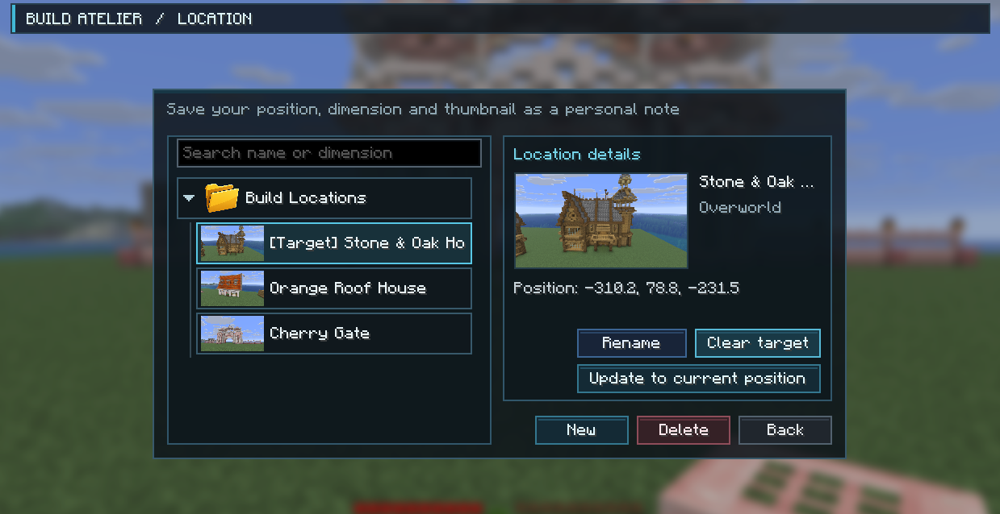
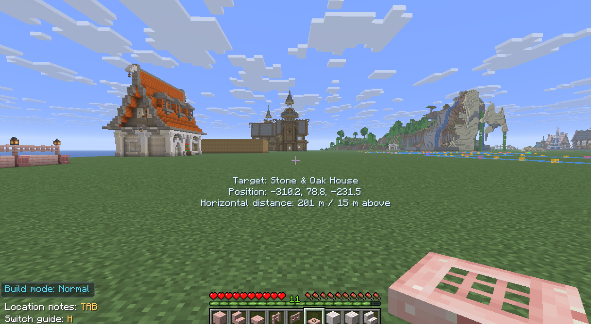
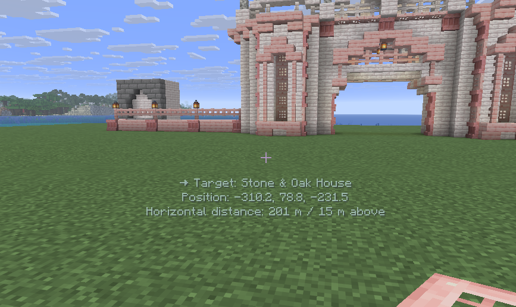
Construction guides
Construction guides mark planned boundaries and pillar positions without placing blocks. Plan size, height and layout, and save multiple lines or enclosures as one set.
Create and resize / Pillars / Duplicate and group / Save / Visibility and management
Create a line or enclosure and adjust its size
Open Guides from the Left Alt tool menu, choose New, then choose New again in the item/folder menu to create a guide. The eye on each list card toggles that set; the eye on the Guides card in the tool menu toggles all sets. See Visibility and management.
To change a saved set, select its card and choose Edit. Left-click the ground to place a base, then hold a corner or endpoint and move your player. Extend in one direction for a line, or in two directions for an enclosure. Dimensions appear on the right.
| Drag a corner or endpoint | Resize the line or enclosure. |
|---|---|
| Drag an edge | Move the whole guide, including when grabbing an upper or vertical edge. |
| Arrow keys / wheel | Move sideways or vertically with arrows; move forward or backward with the wheel. |
| Shift + wheel | Scroll up to increase height and down to decrease it. Height zero is flat. |
| Drag a corner or endpoint vertically | Adjust height while keeping the base in place. Upper points work too. |
Adjust pillar style, spacing and individual positions
Press C to cycle pillar styles. An enclosure can have pillars outside its boundary or brought back; a line also supports the opposite side. Yellow markers indicate pillar positions. These controls do not place blocks. Press Z to enter pillar-position adjustment.
| Wheel | Increase spacing by scrolling up; decrease it by scrolling down. |
|---|---|
| Ctrl + left-click | Add a pillar marker on the line, or remove an existing marker. |
| Drag a pillar marker | Move it along the line by adjusting your view or player position. |
| Z / Q | Finish pillar adjustment and return to normal guide editing. |
Add, duplicate and manipulate multiple guides
During normal editing, Ctrl + left-click on clear ground adds a line or enclosure; on an existing guide it removes that guide. Press G to select multiple guides. Left-click toggles each guide in the selection, then press G again to finish selecting.
| R / Q while selecting | R clears all selections. Q clears the selection and returns to normal editing. |
|---|---|
| Drag after selecting | Move the selected guides together, even when grabbing a corner. Arrows and the wheel also move the group. |
| R during normal editing | Rotate the active guide or selected group right by 90 degrees. |
| Ctrl + C | Duplicate the active guide or selected group in front of your view. |
| Ctrl + V | Move the active guide or selected group in front of your view. |
| Click an unselected guide | Return to editing that guide individually. |
| Ctrl + Z / Ctrl + Y | Undo or redo guide edits, including resizing, pillar edits and duplication. |
Name and save a set
Press X to save. New sets require a name and the Save button; editing an existing set overwrites that set. You return to the world after saving. Multiple lines and enclosures are saved together, and remain visible as building references after closing the tool.
Q during normal editing discards the current edits and returns to the list. In pillar adjustment or multiple selection, Q exits that mode first.
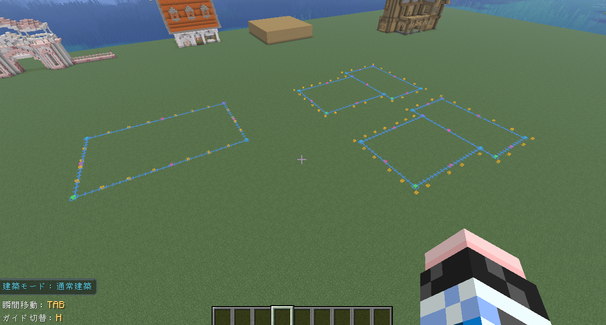
Manage saved guides and visibility
| Eye on a card | Show or hide that set without deleting it. |
|---|---|
| Eye beside Guides in the tool menu | Click the eye on Guides in the Left Alt tool menu to toggle all saved guides. While all guides are hidden, enabling an individual set will not make it visible. Restore global visibility to display the sets marked as visible. |
| Edit | Adjust the selected set again. |
| Update from current view | Choose Update in the confirmation dialog to replace the thumbnail. Shape and position stay unchanged; cancelling keeps the image. |
| Names and folders | Use the card context menu for renaming and other organization actions. New also offers folder creation. |
| Delete | Select the targets, choose Delete, and review the confirmation before deleting. |
After saving, Ctrl + left-click on a visible guide line adds or removes yellow markers; dragging moves them along the line. These changes save automatically. Markers cannot be edited where they overlap blocks or sit behind them, while another tool is active, or when the guides are hidden.
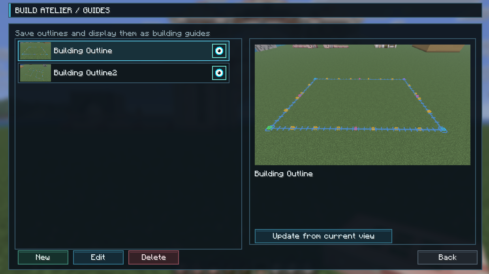
Troubleshooting
If an operation does not work, check the notification and your current editing state. Follow the links below for the relevant controls.
When controls do not work as expected
| A key does nothing | Press B to check whether Build Atelier is enabled. World controls may be unavailable while entering text or viewing another screen. Follow the in-game guide if you changed bindings. |
|---|---|
| Building tools are unavailable in Survival | Building and editing tools require Creative. Survival supports coordinate notes and target navigation; Creative locations support teleporting. |
| Ctrl shortcuts do not work | If Sneak is bound to Ctrl, the shared modifier becomes Shift. Use Shift wherever this manual uses Ctrl for these shortcuts. |
| Undo only changes the selection | Selection editing has its own Undo. To undo a world edit, press Ctrl+Z after placement before starting a new selection, or after exiting the tool with Q. See Undo and Redo. |
| Cannot confirm placement or saving | Read the reason in the notification and wait for pending work. Check size and data limits, unloaded destination regions, world height and boundaries. |
| A door or bed warning prevents selection confirmation | If the notification says the other half is excluded, remove that exclusion. For unloaded-region or limit warnings, wait for the surrounding area to load or reduce the selection, then confirm again. |
| Delete or another operation was stopped | If another player or operation changes the affected blocks and a conflict is detected, processing may stop for safety. Read the notification and inspect the affected area. If another player is editing the same area, wait until they finish before retrying. |
| Large selections or previews take time | Wait while preparation is in progress. Clicking again during connected-selection searching cancels the search, so avoid repeated clicks. Split a large build into sections if it is difficult to handle. |
Processing limits and precautions
Limits depend on the tool and operation. Even within the limits, processing time varies with the build and the PC or server.
| Outer volume for Copy, Move and Library saving | The bounding volume, width × height × depth, is limited to 16,777,216 cells, including air. If the volume exceeds the limit, split the selection into smaller regions. |
|---|---|
| Copy block count | The source non-air block count multiplied by the number of copies must not exceed the default limit of 1,000,000. Include all placement candidates in the copy count. |
| Move and Library saving block count | The default limit is 1,000,000 non-air blocks. Both the outer-volume and non-air-block limits must be satisfied. |
| Server settings and other limits | In multiplayer, the server administrator may set an editing limit below the default. A changed limit also applies in singleplayer. Other tools have their own limits, and Library data-size limits also apply. If a limit warning appears, reduce the selection or copy count. Ask the server administrator if you are unsure of the multiplayer limit. |
| World Undo and Redo | See Undo and Redo for history limits and when history is cleared. Check the notification and affected area if another edit conflicts. |
| Before large edits | Back up important worlds. Undo is not a backup that restores every surrounding change occurring after an edit. |